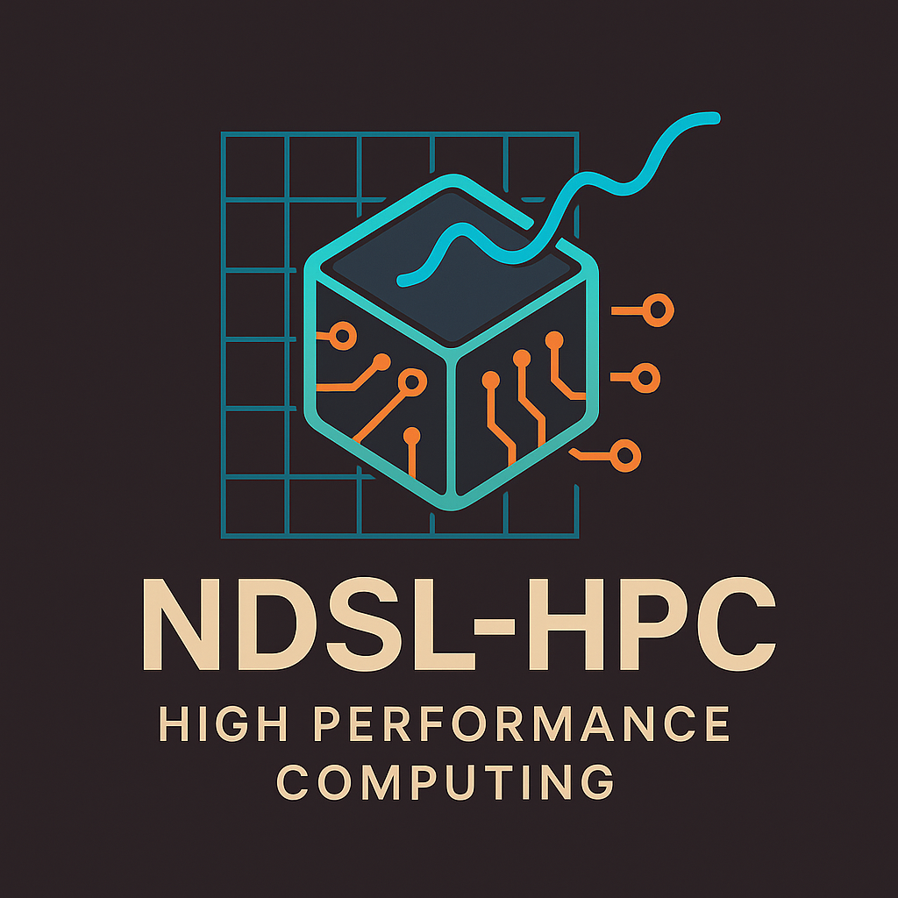
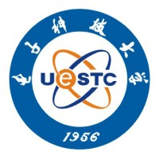

|
Barry Wu | 伍思琦
Shopee Information Technology Co., Ltd., Haidian, Beijing, China, 100190
dionysusfhs@gmail.com | GitHub | LinkedIn
Profile
Hi there, I'm Siqi, currently an algorithm engineer at Shopee. I obtained my bachelor's degree in AI from the School of Computer Science and Engineering at UESTC. My current research interests involve Online Advertising, Quantitative Investing, AI-Medicine and ML System～
Connect with me via email at dionysusfhs@gmail.com or via LinkedIn. All advice and questions are welcome!
Education
University of Electronic Science and Technology of China (UESTC)
B.Eng. in AI, School of Computer Science and Engineering
Sep 2021 - Jun 2025
GPA: 3.8/4.0 | Average Score: 87/100
|
|
Work Experience
|
Shopee Information Technology Co., Ltd.
Jul 2025 - Present
Ads Algorithm Engineer
Mentor: Hub Di and Saul Li
- Designed and implemented multi-region mixed training experiments, exploring batch sampling ratios, data path configuration, and resource scheduling; achieved +0.4% pCR AUC improvement across five regions (excluding SG) and +1.5% in SG.
- Built a unified monitoring system for ad models covering sample/feature consistency, AUC and PCOC; enabled daily auto-updates and historical backfill.
- Resolved online–offline feature/sample inconsistencies and reduced feature inconsistency rate from >5% to <1%.
- Activated 500+ feature nodes and integrated 200+ new features into production pipelines.
|
Research Experiences
|  |
Research Intern, Network and Distributed Systems Laboratory, UESTC
Mar 2024 - Aug 2024
Mixed Precision LLS Solver on Tensor Cores (Supervisor: Prof. Shaoshuai Zhang)
- Explored mixed-precision algorithms to solve high-precision linear least squares on Tensor Cores; analyzed singular-value distributions to address convergence on ill-conditioned matrices.
- Implemented double-blocking TSQR with JIT kernels and achieved up to 2.2× speedup over cuSOLVER for FP64 QR decomposition; overall solver up to 26× speedup on favorable matrices.
- Trained a 2-layer LSTM on 15,000 matrix instances to classify matrix types and select robust solver strategies (99.6% classification accuracy).
|
|
Research Intern, Elmore Family School of ECE, Purdue University (Remote)
Jun 2024 - Aug 2024
Retrieval-Augmented Clinical Predictions (Supervisor: Prof. Haoyu Wang)
- Installed and indexed MIMIC-III/IV datasets and developed retrieval pipelines using LLMs for RAG-enhanced clinical prediction.
- Designed a BERT-based classification algorithm and LLM summarization strategies to reduce token overflow and improve performance.
|
Project Experiences
|  |
Knowledge-Driven Visual Association Search System — KRR Course Project (UESTC)
Dec 2023 - Jan 2024
- Built cross-modal retrieval using BLIP and CLIP, implemented a web interface and demonstrated robust retrieval performance.
Score an Essay Using DeBERTa — Statistical Learning Course Project (UESTC)
Sep 2023 - Nov 2023
- Developed an automated essay scoring pipeline using DeBERTa; applied AdamW, CosineAnnealingWarmRestarts, and K-fold CV; achieved MCRMSE=0.4492 on Kaggle.
|
Publications
[1] Gaoyuan Z., Siqi Wu, and Shaoshuai Z.. “Improving the Reliability on Scientific Computing Using Tensor Cores: A Case Study on Solving High Precision Linear Least Square Problems.” (Submitted to SC2025)
[2] Hansheng Wang et al. “Improving Tridiagonalization Performance on GPU Architectures.” (Accepted by PPoPP2025)
|
Honors & Awards
- 2024 UESTC SCSE Outstanding Student Award
- 2023 Huawei Intelligence Foundation Scholarship
- 2022-2024 UESTC Exemplary Student Scholarship
- 2025 Baidu Business AI Technology Innovation Competition: Top 20
|
Skills & Interests
Languages & Tools: C, C++, Python, MATLAB; Linux, PyTorch, TensorFlow, Pandas, NumPy, LaTeX, HTML, SQL
Languages: Mandarin (Native), English (IELTS 7.0)
Interests: Badminton, Long-distance running, Music, Movies, Photography
|
|